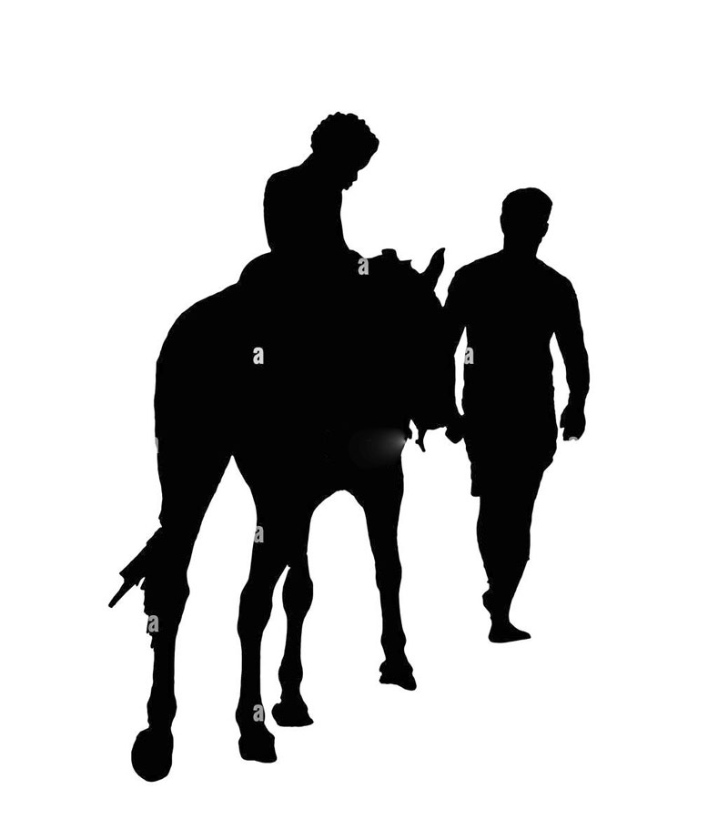
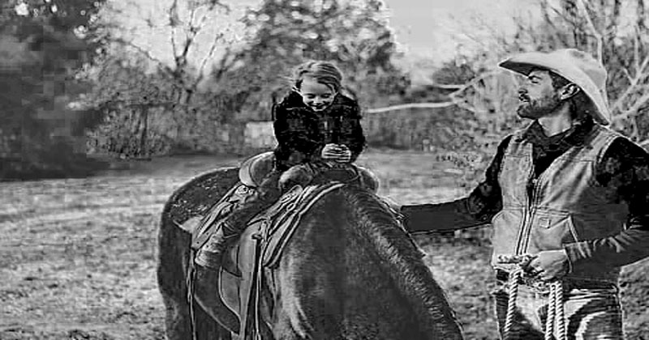

Bedui na Farasi wake: Heshimu maono, na usivutwe na Mitizamo ya nje.
Umetakiwa kuwa mwangalifu na kufuatilia maono yako kutoka ndani yako na sio kushawishiwa na mawazo ya watu wengine. Lazima ukumbuke njia uliyopitia hadi sasa na uchukue maamuzi kulingana na ukweli wa safari yako ya maisha badala ya kufuata maoni ya watu ambao wanakuona kwa wakati huu. Wewe pekee ndiye unayejua malengo yako na umbali uliopita, pamoja na jinsi ulivyofanya maamuzi kufikia mahali ulipo sasa. Hivyo, ni muhimu kuheshimu ndani yako na kusikiliza hisia zako binafsi badala ya kuathiriwa na mitazamo ya wengine juu ya wewe ni nani au jinsi unavyoendelea.
Mtoto juu ya farasi.
 Bedui alimchukua mwanawe wa kiume kwenye safari ndefu
Ili kumfundisha kwamba maoni ya watu hayapaswi kubadilisha malengo yake. Kabla ya safari Bedui aliandaa farasi na akahakikisha wana chakula na maji kwa ajili ya safarini yao nzima. Bedui alianza kwa kumpandisha mwanae kwenye farasi na yeye mwenyewe akaamua kutembea kwa miguu. Walitembea kwa saa moja na kukutana na watu wengi njiani. Baadhi ya watu walimwambia Bedui, “Kwa nini wewe kama mtu mzima unatembea kwa miguu wakati unaweza kuwa umepanda farasi, na kumwacha mwanao mwenye nguvu aendelee kumpanda?” Bedui alijibu, “Safari yetu ni ndefu na mtoto hawezi kuhimili uchovu.” Watu hao walisema, “Unamletea mtoto vibaya na hatakuwa na ukakamavu atakapokuwa mkubwa.” Baada ya kuwaacha watu hao nyuma, Bedui alimwambia mwanae, “Hao ndio watu, zoea kuishi nao kwa msukumo wa maono yako na sio mitazamo yao kukuhusu.”
Bedui juu ya Farasi.
Bedui kisha alimwambia mwanawe ashuke kutoka kwenye farasi na yeye mwenyewe akampanda ili waendelee na somo lao. Walisonga mbele na wakakutana na kundi lingine la watu. Walipoona kwamba mtoto anatembea na baba yake amepanda farasi, walitoa maoni, “Una ukosefu wa huruma kwa mwanao mwenyewe. Baba anapanda farasi na mtoto anatembea kwa miguu? Hii inawezekanaje?” Bedui alijibu na kuwaambia, “Tunapanda kwa zamu kwa sababu safari ni ndefu na hatuwezi kuhimili uchovu wote.” Watu hao wakamwambia, “Umepumzika vya kutosha, mpe mtoto nafasi ya kupanda farasi ili muendelee na safari.”
Baada ya kuwaacha watu hao nyuma, Bedui akamwambia mwanae, “Hao ndio watu, zoea kuishi nao kwa msukumo wa maono yako na sio mitazamo yao kukuhusu.”

Bedui na mwanawe juu ya Farasi.
Kisha Bedui akamwambia mwanawe, “Panda juu ya farasi, tukae wote.” Mwanawe akampanda farasi na wote wawili wakasafiri pamoja. Walipofika kwenye kundi lingine, watu hao wakawauliza, “Kwa hakika watu hawana huruma hata kwa wanyama. Inawezekanaje baba na mtoto kumpanda farasi mmoja?” Bedui akawajibu, “Safari yetu ni ndefu na tumechoka, hivyo tumempanda ili kupunguza uchovu.” Watu hao wakamjibu, “Mnatesa mnyama huyu. Ingekuwa bora kumpanda mmoja baada ya mwingine kwa zamu.” Baada ya kuwaacha watu hao nyuma, Bedui akamwambia mwanawe, “Hao ndio wanadamu. Zoea kuishi nao kwa msukumo wa maono yako na sio mitazamo yao kukuhusu.”
Farasi peke yake.
Kisha Bedui akamwambia mwanawe, “Tuteremke wote kutoka kwenye farasi na tuendelee kwa kutembea kwa miguu.” Nao wote wawili wakateremka na kuanza kutembea kwa miguu. Walipokutana na kundi lingine la watu, watu hao wakawauliza, “Kwa hakika nyinyi hamna hekima. Mnawezaje kutembea kwa miguu huku mkiwa na farasi wa kuwapanda?” Bedui akawaambia, “Safari yetu ni ndefu na tumeona kwamba farasi huyu atachoka sana. Hivyo, tumeamua kumpumzisha.” Watu hao wakamjibu, “Ingekuwa bora farasi afe lakini mzigo wa bwana wake ufike. Baada ya kuwaacha watu hao nyuma, Bedui akamwambia mwanawe,”Hao ndio wanadamu. Zoea kuishi nao kwa msukumo wa maono yako na sio mitazamo yao kukuhusu.”
Funzo/somo kwenye makala hii.
Katika safari ya maisha, ni muhimu sana kujikita katika maono yako na kuepuka kushawishika na mitazamo ya watu wengine. Hapa kuna mtiririko mzuri wa hatua za kufuata: Sukumwa na maono kutoka ndani: Anza kwa kuangalia ndani yako na kutafakari kuhusu ndoto na malengo yako. Jiulize ni nini hasa unachotamani kufikia na ni jinsi gani unaweza kujenga maisha yenye maana kwako.
Kumbuka njia uliyopita: Angalia nyuma na utambue hatua ulizochukua mpaka sasa. Jitathmini kwa makini uzoefu wako, mafanikio yako, na changamoto ulizokabiliana nazo. Njia hii itakusaidia kujifunza kutokana na uzoefu wako na kuwa na msingi imara wa maamuzi yako ya baadaye.
Fanya maamuzi kwa kuzingatia uhalisia: Wakati wa kufanya maamuzi, weka akili yako katika uhalisia wa hali ya sasa. Angalia uwezo wako wa kutekeleza maono yako. Kuwa mkweli wewe mwenyewe kuhusu changamoto na vikwazo vinavyoweza kujitokeza, lakini pia kuwa na ujasiri wa kuchukua hatua za kukabiliana na hali hizo.
Epuka kufuata mitazamo ya wengine: Usiache maamuzi yako yawe chini ya ushawishi wa watu wengine ambao wanaweza kuwa na maoni tofauti na yako. Tathmini maoni yao kwa umakini, lakini mwisho wa siku, wewe ndiye unayejua vema njia yako na malengo yako ya kibinafsi.
Heshimu msukumo kutoka ndani yako: Jisikie huru kusikiliza ndani yako, kwa kuwa huko ndiko maono yako na dira yako ya maisha ilipo. Weka nia yako katika kujenga maisha yenye maana na furaha kwako binafsi. Kuwa mwaminifu kwa ndoto zako na endelea kujitahidi kuzifikia. Kumbuka, wewe ndiye msafiri katika safari yako ya maisha. Unajua ni umbali gani umefika na ni umbali upi unahitaji kufikia maono yako. Thamini na heshimu uzoefu wako na uwezo wako wa kufanya maamuzi sahihi kwa ajili ya safari yako ya kibinafsi.